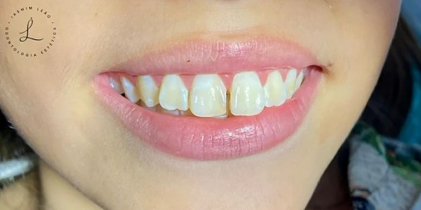
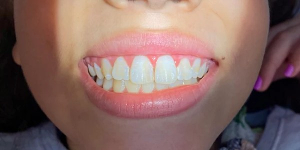
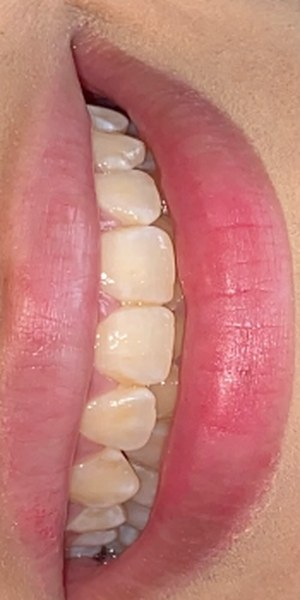
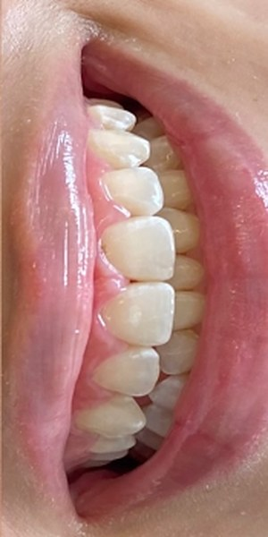

Dentística: restaurar com naturalidade.
A área da odontologia que devolve forma, função e estética aos dentes. É a área de aperfeiçoamento da Iasmim.
O que é
A dentística cuida de restaurar os dentes. Pode incluir restaurações em resina na cor do dente, reconstrução de dentes quebrados ou desgastados e ajustes de formato.
Para quem
Para quem tem cárie, restaurações antigas ou escurecidas, dentes lascados, ou quer melhorar o formato e a harmonia do sorriso.
Como é a consulta
Depois do exame, a dentista explica o que pode ser feito e em quantas sessões. Nos procedimentos em resina, o material é aplicado e esculpido diretamente no dente.
Cuidados depois
Boa higiene e retornos periódicos ajudam a manter o resultado. A dentista orienta sobre polimento e manutenção.
Estética do sorriso.




Casos atendidos por Iasmim Leão, CRO-CE 18162. As imagens mostram o início e o resultado final do tratamento. Cada pessoa responde de um jeito, e a indicação depende de avaliação.
Perguntas frequentes
Restauração em resina fica da cor do dente?
Sim. A resina é escolhida no tom do seu dente e esculpida para acompanhar o formato natural.
Quanto tempo dura uma restauração?
Depende do tamanho, do local, da mordida e dos seus cuidados. Os retornos de rotina servem para acompanhar e fazer a manutenção.
Dá para fechar espaço entre os dentes sem aparelho?
Em alguns casos, sim, com resina. A avaliação mostra se essa é uma boa opção para você ou se outro caminho é mais indicado.
Outros tratamentos.
Tire suas dúvidas na avaliação.
Mande uma mensagem e combine o seu horário pelo WhatsApp.